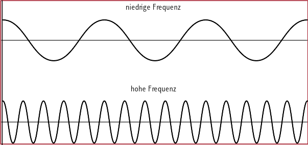
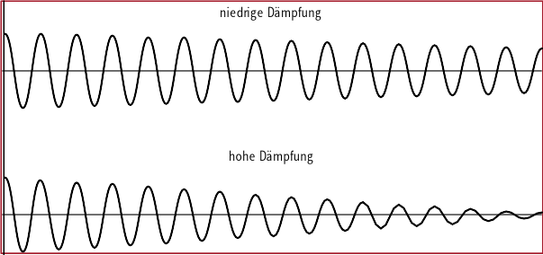
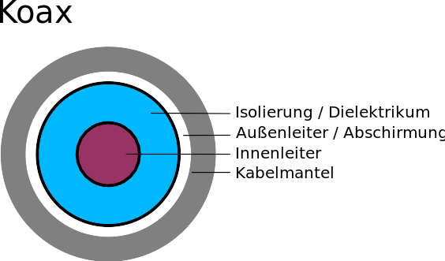
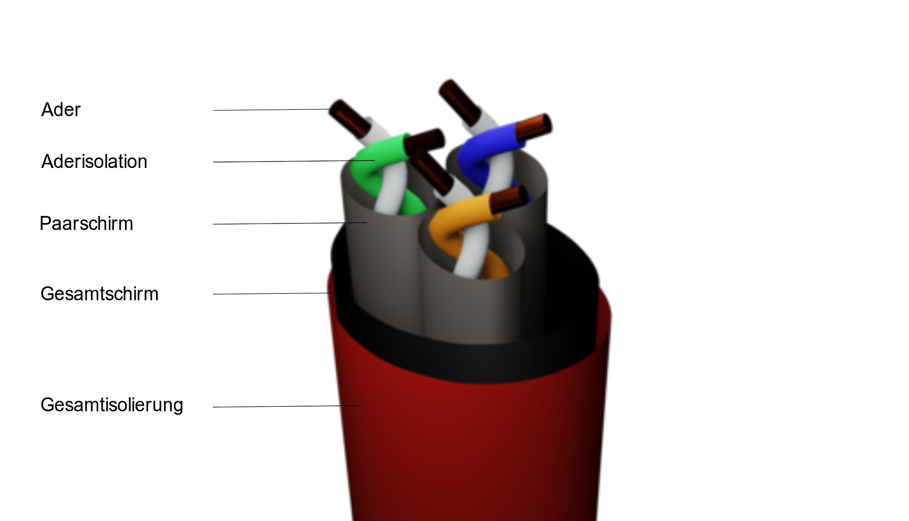
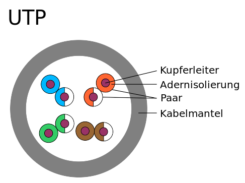
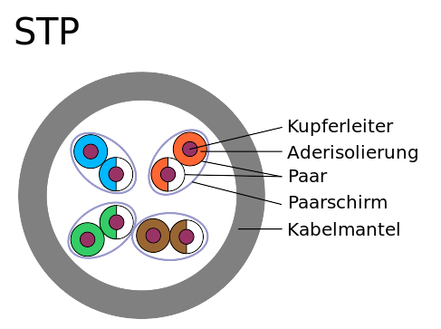
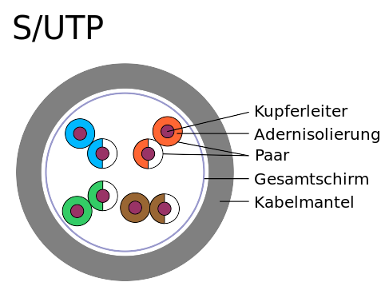
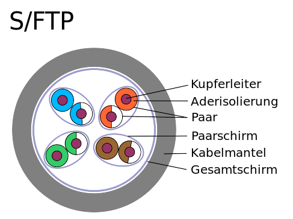
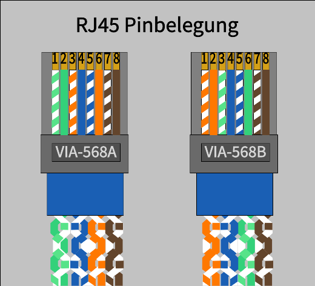

Die Bandbreite sagt aus, wie viele Datenbits über eine Netzwerkverbindung in einer
Sekunde übertragen werden kann.
In Netzwerken sind Kilo- Mega- oder Gigabit pro Sekunde als Einheiten üblich.
Im wesentlichen hängt die Bandbreite von der Übertragungs-Frequenz und der Anzahl der
Übertragungs-kanäle, z. B. die Anzahl der Leitungen.
Reichweite
In den Protokollen zur Datenübertragung wird bestimmt, wie weit ein Signal in einer
bestimmten Bandbreite verlustfrei übertragen werden kann. Während bei kabelgebundenen
Medien vor allem die Eigenschaften des Kabels die Reichweite bestimmen, gibt es bei
kabellosen Verbindungen in der Regel viele Faktoren, die die Reichweite beeinflussen.
Frequenz

Signale durch die sogenannte Modulation eines Trägersignals übertragen.
Das Trägersignal ist dabei entweder eine Sinuswelle oder eine Folge von Impulsen, wobei
ein Strom oder Lichtsignal an und ausgeschaltet wird. Die Frequenz wird in (Mega-, Kilo-,
Giga-)Hertz gemessen und gibt an, wie oft die Welle in einer Sekunde hin und her
schwingt, bzw. wie viele Ein-/Ausschaltvorgänge in einer Sekunde geschehen.
Dämpfung

Das Trägersignal hat neben der Frequenz auch eine Signalstärke. Mit der Zeit / Distanz nimmt die
Signalstärke ab, weil Energie "verloren" geht. Irgendwann ist sie so schwach, dass die
Signale nicht mehr (verlässlich) erkannt werden können.
Wie schnell die Signalstärke abnimmt wird mit der Dämpfung angegeben. Je höher die Dämpfung
desto kurzer die Reichweite.
Duplexfähigkeit
Eine wichtige Eigenschaft ist auch die Frage in welche Richtung Daten übertragen werden
können. Man unterscheidet dabei zwischen:
Simplex (SX) oder Richtungsbetrieb, wobei Daten nur in eine Richtung übertragen werden
können. Dies gibt es in der Netzwerktechnik nur in Form von:
Dual-Simplex (DSX) wobei zwei getrennte Leitungen für das Senden und Empfangen von
Daten genutzt werden.
Halbduplex (HX/HDX) oder Wechselbetrieb: Daten werden abwechselnd gesendet und
empfangen.
Vollduplex (DX/FDX) oder Gegenbetrieb: Daten werden gleichzeitig in beide Richtungen übertragen.
Störsicherheit
Bei der Signalübertragung gibt es verschiedene Signale, die zu Störungen führen
können. So können sich elektromagnetischen Felder überlagern, Signale können reflektiert
werden, Hindernisse können Funksignal stören, etc.
Die Störsicherheit beschreibt, wie gut eine Medium gegen solche Störungen abgeschirmt ist.
Kabelgebundene Medien
Vorteile (gegenüber kabellosen):
Bessere Abhörsicherheit.
Geringerer Energieverbrauch.
Höhere Störsicherheit.
Kupferkabel
Kupfer ist das am häufigsten genutzte Übertragungsmedium. Kupfer ist hochverfügbar, ist
ein guter Leiter und vergleichsweise flexibel.
Es gibt verschiedene Verarbeitungen des Materials als Kabel.
Koaxial

Abbildung 4: Koaxialkabel
Twisted Pair

Abbildung 5: S-FTP Twisted-Pair-Kabel
Twisted-Pair-Kabel sind die am häufigsten eingesetzten Kabel in der Netzwerktechnik. Die
allgemein bekannten Cat-Kabel mit RJ45-Stecker setzen alle auf diese Technik.
UTP: Unshielded Twisted Pair

Abbildung 6: UTP-Kabel
Einfachste Form eines Twisted-Pair-Kabels.
STP Shielded Twisted Pair

Abbildung 7: STP-Kabel
Gegenüber dem UTP-Kabel hat das STP-Kabel um jedes Adernpaar einen Folienschirm, der
verhindert, dass sich die Adernpaare gegenseitig stören.
SUTP Screened-Unshielded Twisted Pair

Abbildung 8: S/UTP-Kabel
Gegenüber dem UTP-Kabel verfügt das S/UTP-Kabel über einer Abschirmung um das
gesamte Kabel, sodass weniger abstrahlt und vor Störungen von außen gesichert ist.
S/FTP Screened-Foiled Twisted Pair

Abbildung 9: S/FTP-Kabel
Das S/FTP-Kabel verbindet die Eigenschaften von STP- und S/UTP-Kabel, verfügt also über
einen Adern- und einem Gesamtschirm.
CAT Kabel mit RJ45-Stecker
Zur Zeit sind CAT-Kabel mit dem RJ45-Stecker die wichtigsten Kabel im Netzwerkbereich,
weshalb wir sie gesondert betrachten.

Abbildung 10: Pinbelegung auf RJ45-Steckern
Glasfaser
In Glasfaser-Kabeln werden Signale mit Lasern oder LED-Licht im inneren einer sehr dünnen Glas-,
seltener einer Kunststoff-Röhre.
Vorteile:
hohe Bandbreite.
sehr hohe Störsicherheit (keine elektromagnetische Beeinflussung).
hohe Abhörsicherheit.
Geringer Energieverbrauch.
Hohe Reichweite (abhängig von der Kabelart).
Nachteile:
teure Anschaffung.
nicht sehr flexibel, zerbrechlich (außer Kunststoffkabel).
In der Regel nur dual-simplex-fähig.
Multimode
Multimode-Glasfasern übertragen gleichzeitig mehrere Signale (Moden). Dies klingt nach
einem Vorteil, allerdings sind dies die (vergleichsweise) billigeren Kabel. In einem
Kern mit einem vergleichsweise großen Kern von 50 µm werden die Laser in einem Winkel
eingestrahlt und reflektiert.
mit Stufenindex
Abbildung 11: Multimode Glasfaser mit Stufenindex
In Multimode-Glasfasern mit Stufenindex werden die Lichtstrahlen hart am Kernrand reflektiert.
Das führt dazu, dass die Signale verschiedene Laufzeiten haben.
mit Gradientindex
Abbildung 12: Multimode Glasfaser mit Gradientindex
Die Wand des Kerns ist speziell gearbeitet, sodass das Licht weich in einer Kurve
(Gradient) reflektiert wird, sodass alle Signale (fast) die selbe Laufzeit haben.
Single Mode
Abbildung 13: Single Mode Glasfaser
Bei der Mono- oder Single-Mode-Glasfaser wird ein Laser parallel zum Kern eingespeist. Der Kern hat
einen sehr kleinen Durchmesser von 9 µm. Das Kabel muss absolut gerade verlegt werden,
sodass es im Kern nicht zu Reflexionen kommt.
Kabellose Medien
Vorteile:
Keine Baumaßnahmen notwendig.
Überall einsetzbar.
Kostengünstig.
Nachteile:
Störanfällig.
Leichter abhörbar.
Höher Energieverbrauch.
Funk
Übertragung von Signalen durch nicht gerichtete elektromagnetische Wellen. Dies breiten
sich von der Sendeantennen in alle Richtungen kreisförmig aus.
Vorteil:
empfangende Geräte können sich frei im Empfangsbereich bewegen.
Nachteile:
Hohe Störanfälligkeit.
Besonders leicht abhörbar.
Hoher Energieverbrauch.
WLAN
WLAN ist eine Umsetzung des Ethernetprotokolls über ungerichtete
Funkverbindungen.
Es ist in der IEEE 802.11 normiert, zu der es diverse Erweiterungen gibt.
Die neueste Version WiFi 6/6E (IEEE 802.11ax) könnte bis zu ca. 9 Gbs übertragen. In
der Praxis sind maximale Geschwindigkeiten bis ca. 1.2 Gbs realistischer.
Mobile Netze
(Erste Generation)
Advanced Mobile Phone Service (AMPS)
Zweite Generation (2G):
Global System for Mobile 13 Kbs
GPRS (G): 53,2 Kbs
EDGE (E): 256 Kbs
Dritte Generation (2G)
Universal Mobile Telecommunications System (UMTS): 384 Kbs
HSDPA (H/3,5G/3G+): 7,2 Mbs
HSDPA+ (H+): 42 Mbs
Vierte Generation (4G)
Long Term Evolution (LTE): 500 Mbs
LTE-A (LTE+, 4G+): 1 Gbs
5G: bis 10 Gbs
Weitere Beispiele:
Bluetooth.
Near Field Communications (NFC)
ZigBee.
Matter
LoRaWAN.
Richtfunk
Übertragung von Signalen durch gerichtete elektromagnetische Wellen. Diese werden durch
spezielle Richtannten auf ein ausgewähltes Ziel ausgerichtet.
Vorteile (gegenüber ungerichtetem Funk):
Hohe Bandbreite.
Große Reichweite.
Abhör- und störsicherer.
Satellitenkommunikation
Herstellung einer bidirektionalen Telekommunikation zwischen zwei Bodenstationen.
Vorteil:
Theoretische überall nutzbar.
Hohe Bandbreite.
Relativ hohe Abhör- und Störsicherheit.
Theoretisch unbegrenzte Reichweite.
Nachteile:
Direkte Verbindung zum Satelliten muss aufrecht erhalten werden:
geostationäre oder sehr viele Satelliten notwendig.
Hohe Kosten bei der Herstellung und Positionierung der Satelliten.
Infrarot
Es gibt im verschiedene Ansätze die mit Infrarotsignalen Daten übertragen:
IrDA: Datenaustausch zwischen Geräten auf kurzer Distanz.
Vorteile:
vergleichsweise große Bandbreite.
Hohe Stör- und Abhörsicherheit.
Nachteile:
Sichtverbindung notwendig.
Optische Freiraumkommunikation (FSO): Datenübertragung per (Infrarot-)Laser.